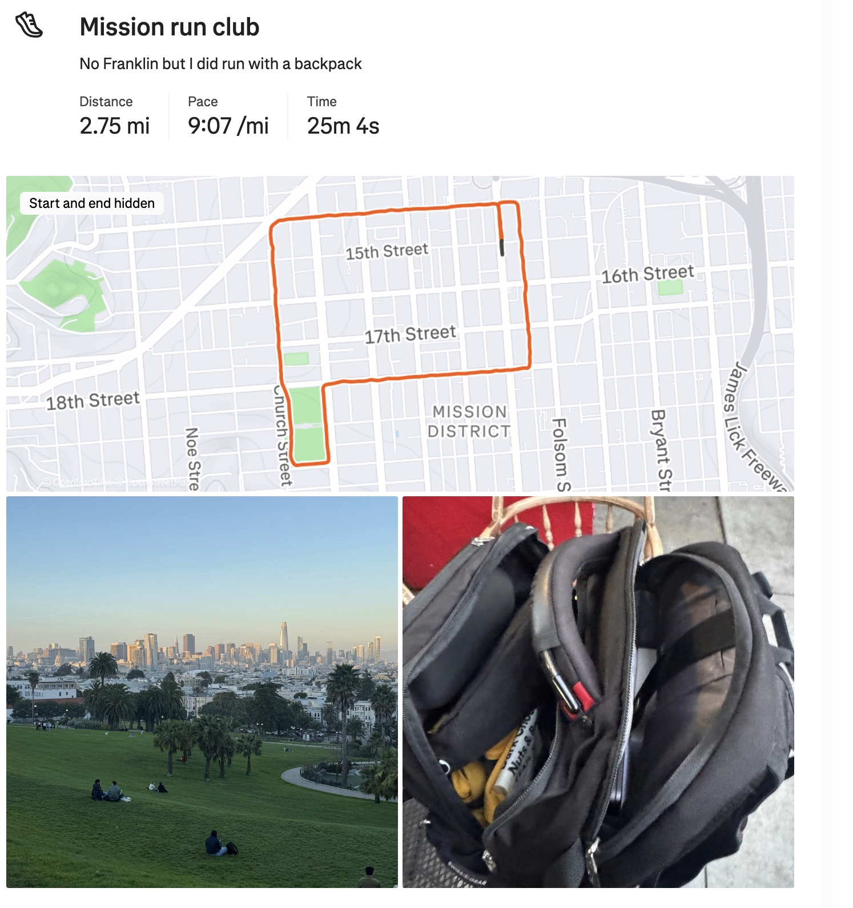
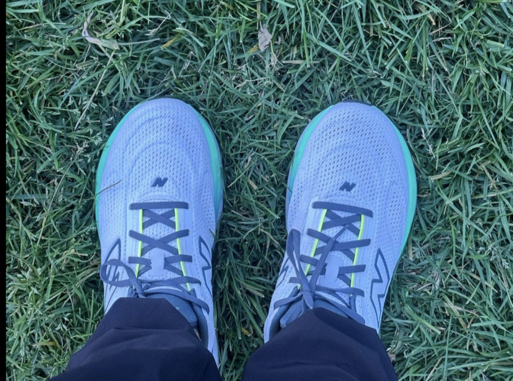
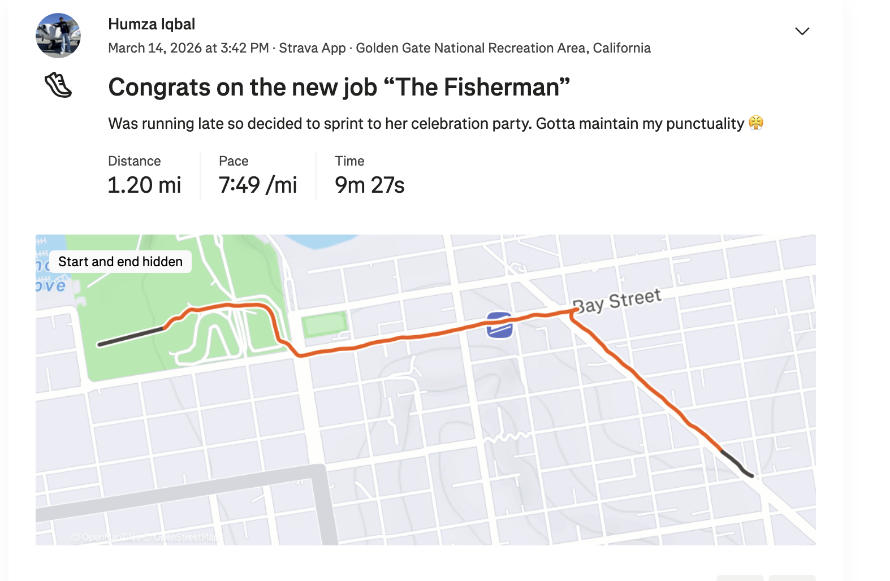
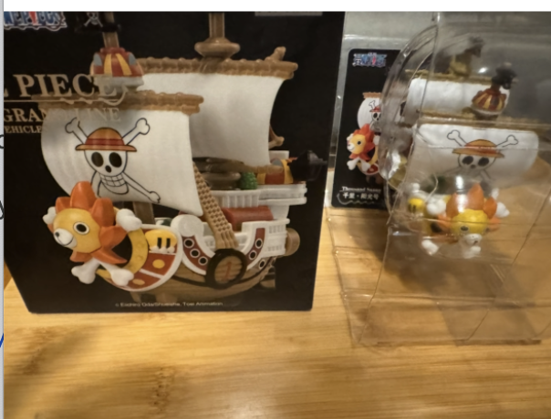

Hey munchkins hows it going? I got some feedback that I should address you all as munchkins like I do in my Yelp reviews. Let’s see how this goes. I am very late on this newsletter for reasons of varying degrees of goodness including being really drained Sunday night and getting shafted by public transit (more details in the next issue. Not many more details but more).
Shoutouts
Congrats to “The Juggler” on getting promoted and becoming a senior engineer!
Monday
After work I go to Mission Run Club. Somehow despite not having a place to hold my backpack I actually manage to hold my own and run at a pretty reasonable pace. When I did it the first time my backpack would constantly come unzipped and it felt like getting punched in the gut. Now it only came open once with no gut punches to be spoken of. I still had my work laptop, non running clothes, 4 things of trail mix, and 3 bottles of coconut water in there so it wasn’t even as though my bag was light either.

Tuesday
Just work today
Wednesday
I did Barry's in the morning for the first time since getting sick. It felt quite good being back in the arena. I think my arms are starting to get stronger. Now I can generally do 25lbs for the lifts and other workouts that I could only do 20 for. At the same time I’ve been debating whether Barry’s is the best if I want to focus on arms as only half the workout is arms and I am paying 38 per class for this. Maybe I should pivot to something else. I made the poor decision to sprint during this workout as well which will come back to haunt me later.
Speaking of, after work I went to Midnight Runners where I saw “The Filmmaker," “The Quant,” “The Beekeeper,” “Sergeant Sassy”, and a special appearance from “Fidel Castro’s jacked grandson” who happened to be in town for the week. This was a festive Holi themed run. It was fun but I overdid it at Barrys in the morning and I couldn’t run the whole time which kinda came back to bite me.
THey also had some pop up event where you can try on some new running shoes they had

It was cool that they did this but to be honest I preferred the Brooks I just got. These shoes definitely lacked the bounce and the soft feeling that I’ve now gotten accustomed to.
Sadly you know that you’re form has taken a hit when not one, not two, but 3 people commented on the fact that I seemed to be limping.
That being said, the post run hangout was awesome. It was great hearing about “Fidel Castro’s jacked grandson’s” adventures in New York. I learned “The Bee Keeper” also lived in New York for a while before coming back to the Bay.
Thursday
Today after work I go to bar night with “The Mosher,” “That’s nuts,” “The Twitch Streamer,” and “The Juggler”. We talked a lot about skiing and I learn there is an app called carve which can get skiing days . You can break down things like how long you have been in line, whether you are skiing on powder and so on. Eden average turn shape, how parallel skis are, how good your balance is and so on.
I thought runners were obsessive about their Strava but this is a whole nother level. Also apparently you generally go slower on a snowboard than skis.
“The Juggler” came by later and I learned that people apparently do acro yoga shows where you watch people perform acroyoga. I’ve seen people do it in the park and what not but I never realized that there are shows for it. He’ll be performing in an elderly home and I’m excited for it.
Friday
I did Barry’s again the morning today. It felt pretty good but I decided to skip the running part and only do arms.
Today after work I went to KBBQ with “The Quant,” and “The Pasta Prince”. While there we debated a question they ask you in finance interviews sometimes. The question goes as follows
Let’s say you have a farm with 100 people who are trying to escape. There is no fence around the farm. All you have is a gun with a single bullet. How do you prevent anyone from escaping.
Apparently the “most correct” answer to this question is to say you will shoot the first person who escapes. I guess the idea here is nobody wants to risk being that first person who is shot even if everyone escapes at the same time your odds of being that person are 1%. Maybe this is why I’m not a finance bro.
The food was great as always of course!
Later I go to meetup with “The Enabler,” “La Tacqueria Royalty” and a bunch of people from the Google group who get dinner. Since I already ate I left a Yelp review. Apparently if you leave a Yelp review you get a free thing of hot sake which I took advantage of and in Yelp review spirit I of course didn’t drink any of that either.
Separately one of the people in the group finally found a Japanese beer he first tried a year ago and really liked but couldn’t find since. According to everyone who drank it it lived up to the hype and was just as good as he remembered it being!
Saturday
The day begins with Marina Run Club with “Top of the Rope”. The run itself is reasonable enough but after the run there is a cold plunge over in the Ocean. Originally I wasn’t planning on doing it but I decided on a last minute whim to do so. I was told my clothes would dry in about half an hour which seemed reasonable enough. I have to admit overall it was better than I thought it would be! My legs felt like they were stabbed with a bunch of needles but the rest of me actually felt pretty good. I don’t know if I’m ready to go full tech bro and say it was restorative or any of that jazz but I’m glad I did it.
After the cold plunge someone set up this tent with a sauna in it which felt quite nice after the plunge.
Then I went to trash pickup with “The Notetaker,” “The Ravenkeeper,” “Granola Girlie” (and her family), “The Politician,” “The Writer,” “The Beekeeper” and many others. It was great to see so many familiar faces at the pickup today.
While there I got to see the website “The Writer” has for his book series. He made a whole website detailing all the characters in the book, some maps of the world, some comics he made, some music he made, and more. He’s a multifaceted creative and this website kinda feels like the amalgamation of all the different talents that he has rolled into one.
Also “Granola Girlie’s” mom was interested in buying a Mooni shirt from me because the kids she teaches would really like something like that. Anything for the kids of Evanston Wyoming am I right?
Afterwards I went to a pi day party in Dolo. The party itself was cool. It was with some people I met at the tech startup party back in episode 64. Unfortunately I don’t remember too much from this party in particular. It was a good time though and I think I’d want to get to know this group of people better.
From there I go to the Marina for a party for someone I know from Midnight Runners who is moving away to NY. He’s a good friend of “Sergeant Sassy” but sadly he never got a nickname so in honor of him moving I’ll temporarily call him “On the road again”. “On the road again” is a really good guy and I wish we could have chatted more before he moved to NYC. He will definitely be missed in the Midnight Runners community.
Sadly I am a bit overbooked today and can’t stick around too long and I sprint off to “The Fisherman’s” party to celebrate her new job. And when I say sprint I mean it literally as I was running late

We all gathered in Washington Square park. It was me, “The Fisherman,” “The Quant,” “The Writer,” “Top of the Rope,” “The Philosopher,” “Mr. Green flag,” and many others from “The Fisherman’s” large group of friends.
“The Quant” got me this cool One Piece mystery box thing from Japan

While in the park someone came up to us asking us to sign a petition. They wouldn’t really take no for an answer when we told her we didn't want to sign and she started sitting down with us. Secretly I kinda enjoyed this because it meant I could do the exact opposite of my first impression training and really let her have it. I did so by going up to her and saying “Mashallah! I just moved here from Pakistan and I can’t wait to sign this thing”. She immediately backed away from me and according to some other people she thought I insulted her. Mashallah is actually not meant as an insult but rather meant to express praise which makes it funny.
I have to admit it felt really good since my first impression training has made it so now I temper myself a lot more when I meet new people and getting to just follow my impulses felt great.
After Washington Square Park we went to Golden Boy’s for pizza. Naturally I didn’t eat any but I didn't quite get around to leaving a Yelp review for it sadly. When I got near the front of the line I met these two girls wearing shirts that said something like “Here to get lucky” or something like that. We were talking for a bit when they asked me how long we had been waiting (over half an hour at that point), and I figured since I was waiting in line but didn’t plan to get anything they might as well take my spot so they did in fact get lucky.
From there we went to Savoy Tivoli to hang out and chat. One of “The Fisherman’s” friends encouraged me to go up to women and say that it's St. Patty’s day and I need to get laid and ask if they could help me with that. There weren’t any women I found particularly attractive so I decided to forgo that but who knows maybe next time. Sadly as the group is getting ready to go to another bar I am tired. In my defense I was out of the house form 7am til 9:30pm but I still felt like a weak waffle rather than the strong souffle I was meant to be.
Sunday
The day begins with trash pickup with “The Menace," “The Writer,” “The Notetaker” and some other folks. During the post trash pickup hang “The Raja of Rhythm” joins and I get to learn more about his trip to Paris, skiing, and the other escapades he’s been up to.
I give “The Writer” some more feedback on his website which is shaping up quite nicely.
After trash pickup I wander around for a while before meeting up with “The Sounds of Startup”. She wanted to pick my brain about her startup idea so we talked for a while and I gave her a bunch of feedback on the idea and I did some QA testing on her app. I’m the first person who has done a full QA pass on the app. It’s pretty cool to see her develop something like this in just a week. It’s clear to me she is quite passionate about the problem space and rather opinionated about how to make a good experience for customers. Admittedly there were some rough edges but thats to be expected of any product that is moving fast.
We wind up going to a coworking space where one of my old coworkers is working out of for his new startup so I got to see him again as well which is nice.
After talking for a while longer with “The Sounds of Startup” I head home. Interestingly she asked me if I journal because I came off as an introspective person and so I told her about the newsletter. It’s the first time anyone ever guessed that I did something like that which was fun to see. I was too tired to write the newsletter so it winds up getting put off for a bit longer.